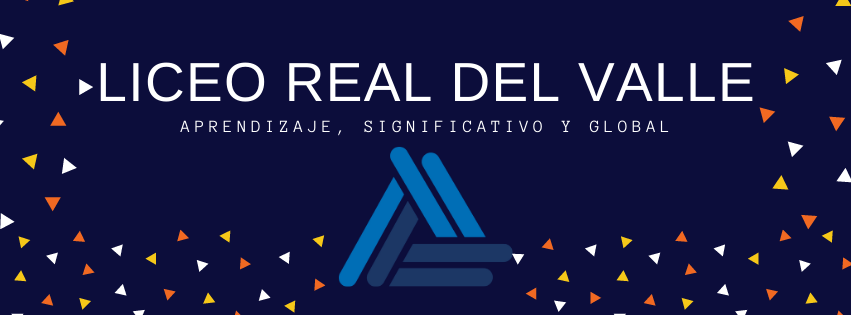

|  |
|
NIVELES EDUCATIVOSPREESCOLAREl Preescolar LRV es un lugar donde nuestros alumnos desarrollan capacidades afectivas, emocionales, sociales, culturales, académicos y cognitivos que refuerzan la confianza en si mismos. PRIMARIA En este nivel preparamos a nuestros alumnos en la adquisición de los conocimientos básicos que son los cimientos de su educación futura, proporcionando un ambiente propicio para el desarrollo integral, con el objetivo de dar a conocer las múltiples ventajas que representa la implementación del modelo educativo AMCO, el cual se adapta al modelo educativo institucional de LRV basado en el Humanismo, Constructivismo y formación de valores. |
|